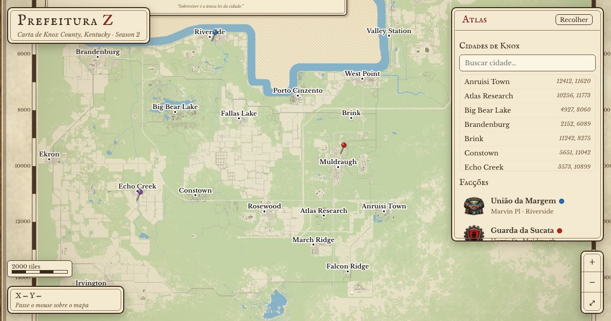

Entre no Discord
Toda a comunidade, os avisos e o suporte ficam lá.
Sobreviver é a única lei da cidade.
Escreva a sua história na Prefeitura Z.
Cidades, ruas, bases das facções e seus próprios pontos no mapa de Knox County.
Abrir o mapa de Knox
Toda a comunidade, os avisos e o suporte ficam lá.
O link do launcher está no Discord. O servidor é só por ele, sem IP nem senha.
O launcher deixa os mods em dia e te leva direto pro servidor. Seu próximo capítulo começa aqui.